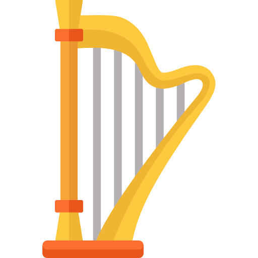

Open on computer to open
C
(z)
D
(x)
E
(c)
F
(v)
G
(b)
A
(n)
B
(m)
C
(q)
D♭
(s)
E♭
(d)
G♭
(g)
A♭
(h)
B♭
(j)
D♭
(2)
-
Keyboard-Keys
Piano-Keys
Show Octaves




Рахманинов
Композитор
- « Музыка прежде всего должна быть любима; должна идти от сердца и быть обращена к сердцу. Иначе музыку надо лишить надежды быть вечным и нетленным искусством».
Эти слова принадлежат С.Рахманинову - великому комозитору, гениальному пианисту и директору. Все важнейшие события русской общественной и художественной жизни отразились в его творческой судьбе, оставив неизгладимый след. Формирование и расцвет творчества Рахманинова приходится на 1890-1900-е гг., время, когда в русской культуре происходили сложнейшие процессы, духовный пульс бился лихорадно и нервно.
- « Единственное, что я стараюсь делать, когда я сочиняю музыку — это заставить её прямо и просто выражать то, что у меня на сердце.»
- « Уехав из России, я потерял желание сочинять.»